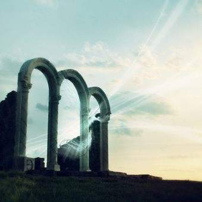
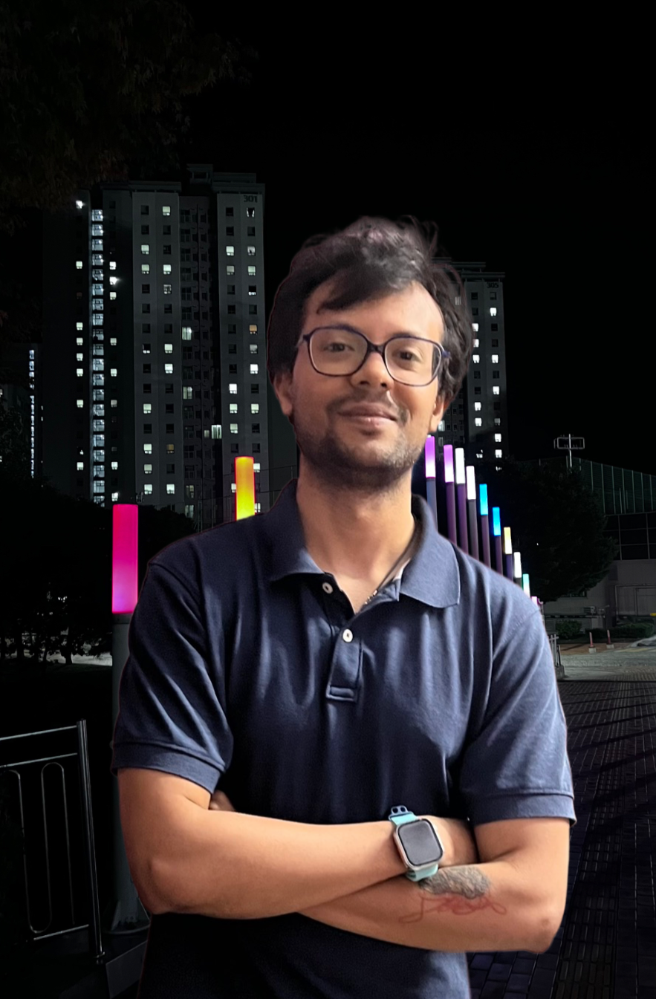
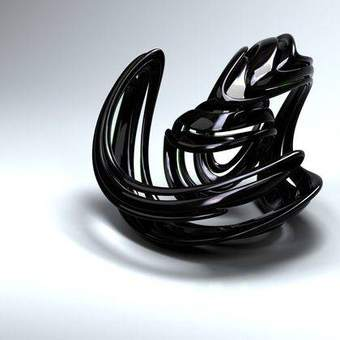
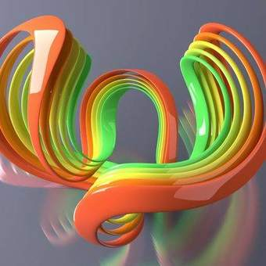
> Hi, it's me Suvankar!
Light, shaped at the nanoscale.
Research topic Meta-optical photodetector
I'm Suvankar Sen, a PhD student in Electrical Engineering at UNIST. I'm working on meta-optical photodetectors: detectors with a metasurface on top that lets them see what an ordinary camera can't, from the full spectrum and polarization to light beyond the visible.
I'm advised by Prof. Minho Choi in Ulsan, South Korea. Before that, I was at RMIT University in Melbourne, working on phase-change materials for tunable metasurfaces, and earlier on perovskites for solar cells and LEDs. I trained as an electrical engineer, then as a nanotechnologist. Mostly, I'm trying to become a good scientist.
Now
- Working on
- A meta-optical photodetector. Deriving the band structure of flatband metasurfaces from scratch, first in 1D, then in 2DA flatband is a band whose frequency barely changes with angle. A device built on one responds the same way to light arriving from many directions, which is what you want for a detector., and using it to design a silicon–germanium detector for the telecom C-band (around 1550 nm).
- Building
- An effective Hamiltonian for 2D flatbands, and a time-resolved photoresponse setup for the C-band, to watch detectors respond in under a nanosecond.
- Learning
- Deep learning and the fundamentals of AI; more photonics and mathematics; and Korean, one Hangul block at a time, to add to English, Hindi, Bengali and Odia.
as of October 2026
News
- 2026Started my PhD in Electrical Engineering at UNIST with Prof. Minho Choi, on meta-optical photodetectors. Moved to Ulsan.
- 2024Our miniaturized near-infrared glucose sensor is out in Advanced Sensor Research.
- 2023Published a review on tin-based, lead-free perovskite solar cells in Advanced Energy & Sustainability Research.
- 20232D perovskite and carbon-dot LEDs published in Nanoscale.
- 2022Named Best Science Communicator at the TMOS Conference.
- 2020Won the ACS Energy Letters Best Oral Presentation Award at VCAN 2020.
Research
My PhD topic is the meta-optical photodetector. An ordinary camera throws away most of what light carries: it records brightness in three broad colorsMost image sensors put a mosaic of red, green and blue filters over their pixels, so each pixel records only one of three colours and the rest of the light is simply absorbed and lost. and forgets the fine spectrum, the polarization, and everything outside the visible. I want detectors that keep it.
The tool is the metasurface, a layer of nanostructures thinner than the wavelength of lightEach nanostructure acts like a tiny antenna. By choosing its shape and size, you set how it delays, filters, or rotates the light passing through it, pixel by pixel.. Placed on a detector, it can sort light by color and polarization, or trap it so a thin absorber catches more of it. Designing one by intuition gets hard fast, so I design them in reverse: state what the light should do, and let an optimizer find the structure that does itThis is inverse design. I simulate with rigorous coupled-wave analysis (RCWA) and pair it with gradient-based or gradient-free optimization..
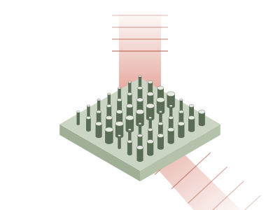
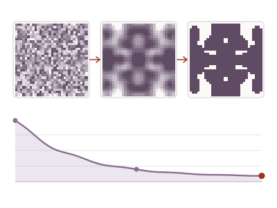
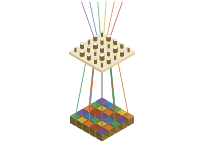
Before UNIST, I worked on optical and electronic materials: phase-change thin films (VO₂, Sb₂Se₃) for tunable metasurfaces, lead-free perovskites for solar cells and LEDs, and plasma processing of nanomaterials. That hands-on fabrication background is what I bring to the computational side.
Mind map click an idea to unfold its work
A living map of how my work connects. It rebuilds itself from this site on every visit: papers, musings, artworks and quotes attach to the ideas they talk about, ideas grow as work piles up, new hashtags sprout new ideas, and whatever I list under Now glows as current focus.
Publications /
-
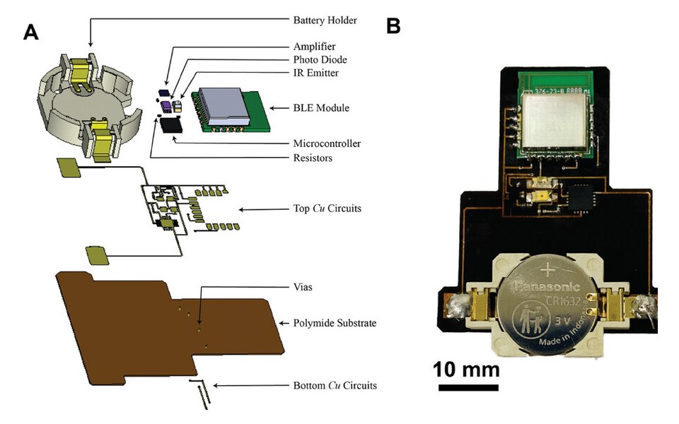
sensingM. Yang, S. S. Dhanabalan, M. R. Robel, L. V. Thekkekara, S. Mahasivam, M. A. Rahman, S. Borkhatariya, S. Sen, S. Walia, S. Sriram, M. BhaskaranAdvanced Sensor Research, 2025, 4(3), 2300160A compact near-infrared sensor that reads glucose through its absorption in the 1600–1700 nm band, a step toward needle-free, continuous monitoring.
- near-infrared
- glucose sensing
- wearable sensors
-
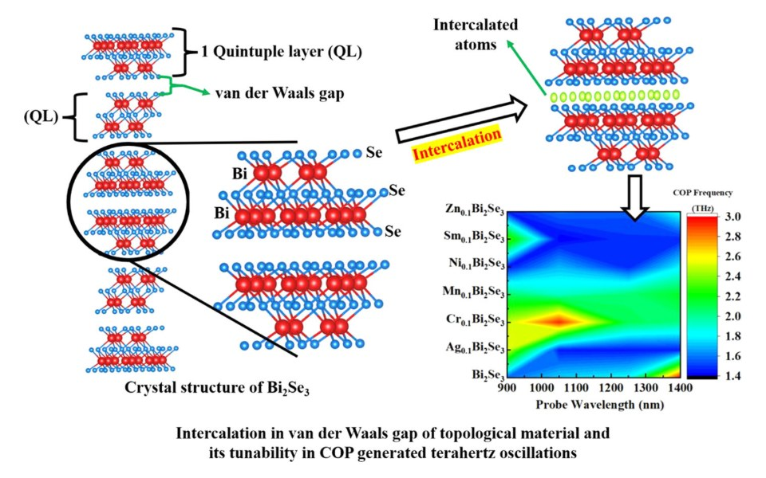
ultrafastP. Sharma, S. Sen, S. Walia, K. Kumar, S. K. Saini, M. KumarApplied Materials Today, 2024, 40, 102400Slipping metal atoms into the van der Waals gaps of Bi₂Se₃ changes how its charge carriers and lattice vibrations relax, and tunes the coherent phonon oscillations it generates in the terahertz range.
- topological insulators
- ultrafast spectroscopy
- coherent phonons
- terahertz
-
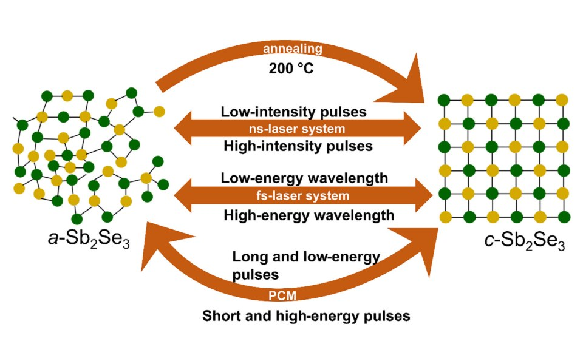
phase-changeK. Murali, L. Thekkekara, M. A. Rahman, S. Sen, V. Shvedov, Y. Izdebskaya, C. Zou, S. A. Tawfik, I. Shadrivov, S. Sriram, M. BhaskaranApplied Materials Today, 2024, 40, 102338How far the optical properties of Sb₂Se₃ can be tuned between its amorphous and crystalline states with heat and nanosecond or femtosecond laser pulses, and what that makes possible across optical and electronic devices.
- phase-change materials
- Sb₂Se₃
- laser switching
- tunable optics
-
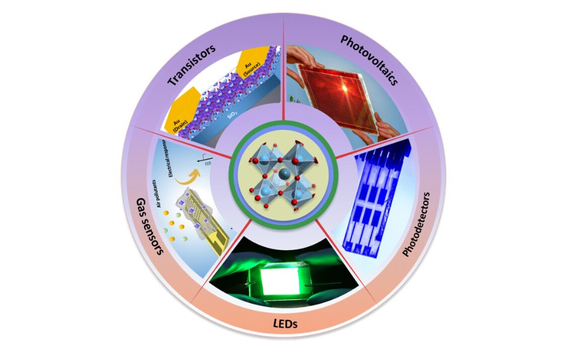
perovskitesS. Sen, S. Gopalan, R. Sellappan, A. N. Grace, P. SonarAdvanced Energy & Sustainability Research, 2023, 4(12), 2300110A review of tin as a replacement for lead in perovskite solar cells: where efficiency and stability stand, what still holds tin back, and how to move lead-free cells toward commercial use.
- lead-free perovskites
- tin halides
- solar cells
- review
-
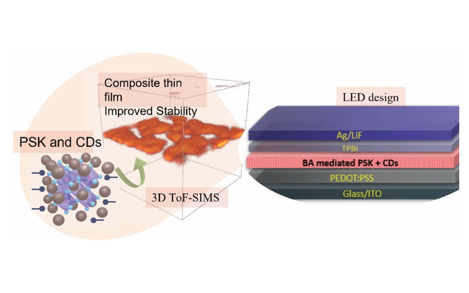
LEDsA. S. Pannu, S. Sen, X. Wang, R. Jones, K. Ostrikov, P. SonarNanoscale, 2023, 15(6), 2659–2666Pairing a layered 2D perovskite with red-emitting carbon dots gives LEDs that are both more efficient and longer-lived.
- 2D perovskites
- carbon dots
- LEDs
- ToF-SIMS
-
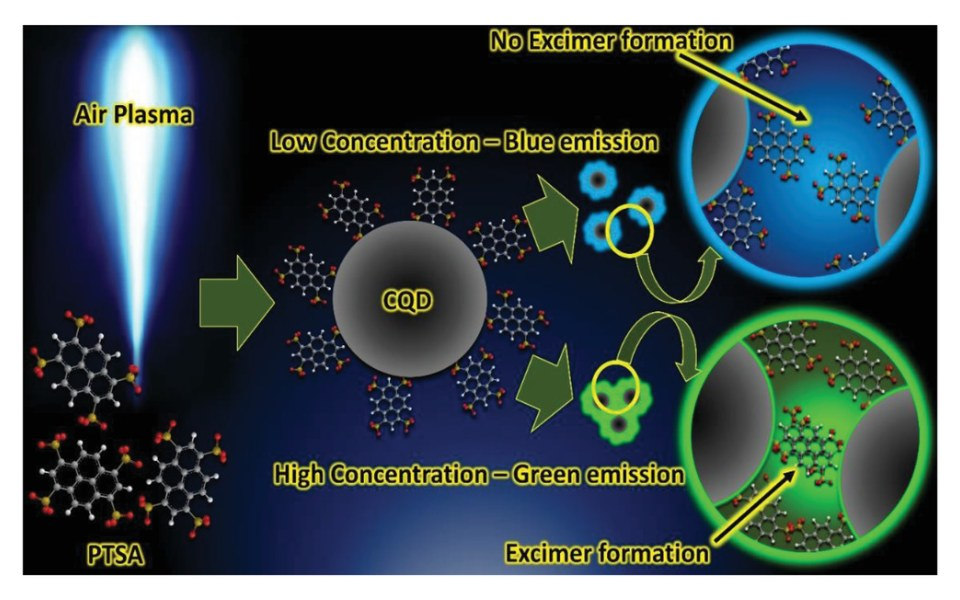
quantum dotsJ. Weerasinghe, J. Scott, A. D. K. Deshan, D. Chen, A. Singh, S. Sen, P. Sonar, K. Vasilev, Q. Li, K. OstrikovAdvanced Materials Technologies, 2022, 7(4), 2100586Carbon quantum dots made with nothing but air plasma at room temperature, with emission that can be held blue or switched to green.
- carbon quantum dots
- cold plasma
- photoluminescence
-
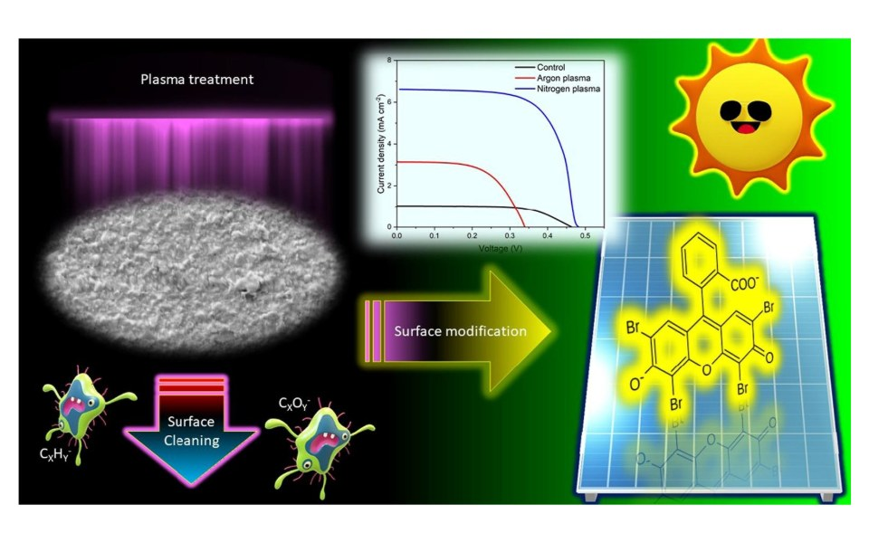
solar cellsJ. Weerasinghe, S. Sen, J. M. K. W. Kumari, M. A. K. L. Dissanayake, G. K. R. Senadeera, C. A. Thotawatthage, M. Ekanayake, R. Zhou, P. J. Cullen, P. Sonar, K. Vasilev, K. OstrikovSolar Energy, 2021, 215, 367–374A short, cold plasma treatment of the photoanode raises the efficiency of cheap, metal-free dye-sensitized solar cells.
- dye-sensitized solar cells
- cold plasma
- surface treatment
-
plasma · TOF-SIMSStudy of chemical changes occurring in Cs-halide perovskites under atmospheric plasma treatment using TOF-SIMS for optoelectronic applicationsS. Sen et al.Materials Today: Proceedings, 2020ACS Energy Letters Best Oral Presentation Award
Time-of-flight mass spectrometry tracks how atmospheric plasma rewrites the surface chemistry of cesium halide perovskites.
- halide perovskites
- cold plasma
- ToF-SIMS
Journey
- 2026 – nowPhD, Electrical EngineeringUlsan National Institute of Science and Technology (UNIST), South KoreaΠ Lab, Prof. Minho Choi · research topic: meta-optical photodetector
- 2021 – 2024ResearcherRMIT University, Melbourne, AustraliaTunable metasurfaces using phase-change materials
- 2019 – 2020Visiting Research StudentQueensland University of Technology, Brisbane, AustraliaMaster's thesis research on lead-free perovskites for optoelectronics
- 2018 – 2020M.Tech, NanotechnologyVellore Institute of Technology, India
- 2012 – 2016B.Tech, Electrical & Electronics EngineeringBiju Patnaik University of Technology, India
Honors
- 2024Best Volunteer Award, nominee · RMIT Creatives
- 2022Best Science Communicator · TMOS Conference
- 2020Best Oral Presentation Award · ACS Energy Letters, VCAN 2020
- 2018GATE scholarship · Government of India, for my Master's
Toolkit
- Fabrication
- PVD, photolithography, nanomaterial synthesis, annealing, electrochemistry, spray pyrolysis, cleanroom work, etc.
- Characterization
- SEM / EDS, TEM / STEM, AFM, XRD, XPS, STM, TOF-SIMS, etc.
- Optical
- UV-Vis-NIR and Raman spectroscopy, optical microscopy, electronic testing, etc.
- Coding
- Python, MATLAB, C / C++, TCAD, VESTA, etc.
- Graphics
- Inkscape, Blender